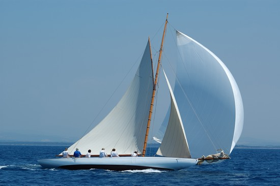

Bonjour, je suis Achille BAZIN 😎

Business School
Troisième année du Bachelor Audencia
Recherche de stage de fin d'étude -> Business developer

EXPERIENCES
Doctoranytime (Plateforme de mise en relation des praticiens et des patients), STAGE, Chargé d'étude Marketing, Bruxelles, Belgique.
SEOAugmenter la performance du marketing , création de google ads
Account management
Proposer des stratégies de communication via les différents canaux (mailing, réseaux sociaux...)
Réaliser des campagnes E-mailing et newsletter
Recrutement de nouveaux stagiaires
Easia Travel (Destination Management Campany), STAGE, Web Prospection, Bangkok, Thaïlande.
Sourcing de prospectsEvaluer le potentiel des suspects, analyse de 2400 sites web Solikend (Moteur de réservation d'hôtel solidaire), MISSION D'ENTREPRISE AUDENCIA, Chargé de développement commercial, Nantes. Développement du portefeuille clients
Organisation d'un séminaire phoning et coaching d'étudiants
Club de l'étoile (Restaurant), EMPLOI SAISONNIER, Serveur, Barman .
LOISIRS
Sport
Football
Surf
Cyclisme

Voile
